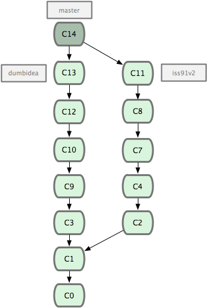

利用分支进行开发的工作流程¶
现在我们已经学会了新建分支和合并分支，可以（或应该）用它来做点什么呢？在本节，我们会介绍一些利用分支进行开发的工作流程。而正是由于分支管理的便捷，才衍生出了这类典型的工作模式，你可以根据项目的实际情况选择一种用用看。
长期分支¶
由于 Git 使用简单的三方合并，所以就算在较长一段时间内，反复多次把某个分支合并到另一分支，也不是什么难事。也就是说，你可以同时拥有多个开放的分支，每个分支用于完成特定的任务，随着开发的推进，你可以随时把某个特性分支的成果并到其他分支中。
许多使用 Git 的开发者都喜欢用这种方式来开展工作，比如仅在 master 分支中保留完全稳定的代码，即已经发布或即将发布的代码。与此同时，他们还有一个名为 develop 或 next 的平行分支，专门用于后续的开发，或仅用于稳定性测试 — 当然并不是说一定要绝对稳定，不过一旦进入某种稳定状态，便可以把它合并到 master 里。这样，在确保这些已完成的特性分支（短期分支，比如之前的 iss53 分支）能够通过所有测试，并且不会引入更多错误之后，就可以并到主干分支中，等待下一次的发布。
本质上我们刚才谈论的，是随着提交对象不断右移的指针。稳定分支的指针总是在提交历史中落后一大截，而前沿分支总是比较靠前（见图 3-18）。

图 3-18. 稳定分支总是比较老旧。
或者把它们想象成工作流水线，或许更好理解一些，经过测试的提交对象集合被遴选到更稳定的流水线（见图 3-19）。

图 3-19. 想象成流水线可能会容易点。
你可以用这招维护不同层次的稳定性。某些大项目还会有个 proposed（建议）或 pu（proposed updates，建议更新）分支，它包含着那些可能还没有成熟到进入 next 或 master 的内容。这么做的目的是拥有不同层次的稳定性：当这些分支进入到更稳定的水平时，再把它们合并到更高层分支中去。再次说明下，使用多个长期分支的做法并非必需，不过一般来说，对于特大型项目或特复杂的项目，这么做确实更容易管理。
特性分支¶
在任何规模的项目中都可以使用特性（Topic）分支。一个特性分支是指一个短期的，用来实现单一特性或与其相关工作的分支。可能你在以前的版本控制系统里从未做过类似这样的事情，因为通常创建与合并分支消耗太大。然而在 Git 中，一天之内建立、使用、合并再删除多个分支是常见的事。
我们在上节的例子里已经见过这种用法了。我们创建了 iss53 和 hotfix 这两个特性分支，在提交了若干更新后，把它们合并到主干分支，然后删除。该技术允许你迅速且完全的进行语境切换 — 因为你的工作分散在不同的流水线里，每个分支里的改变都和它的目标特性相关，浏览代码之类的事情因而变得更简单了。你可以把作出的改变保持在特性分支中几分钟，几天甚至几个月，等它们成熟以后再合并，而不用在乎它们建立的顺序或者进度。
现在我们来看一个实际的例子。请看图 3-20，由下往上，起先我们在 master 工作到 C1，然后开始一个新分支 iss91 尝试修复 91 号缺陷，提交到 C6 的时候，又冒出一个解决该问题的新办法，于是从之前 C4 的地方又分出一个分支 iss91v2，干到 C8 的时候，又回到主干 master 中提交了 C9 和 C10，再回到 iss91v2 继续工作，提交 C11，接着，又冒出个不太确定的想法，从 master 的最新提交 C10 处开了个新的分支 dumbidea 做些试验。

图 3-20. 拥有多个特性分支的提交历史。
现在，假定两件事情：我们最终决定使用第二个解决方案，即 iss91v2 中的办法；另外，我们把 dumbidea 分支拿给同事们看了以后，发现它竟然是个天才之作。所以接下来，我们准备抛弃原来的 iss91 分支（实际上会丢弃 C5 和 C6），直接在主干中并入另外两个分支。最终的提交历史将变成图 3-21 这样：
图 3-21. 合并了 dumbidea 和 iss91v2 后的分支历史。
请务必牢记这些分支全部都是本地分支，这一点很重要。当你在使用分支及合并的时候，一切都是在你自己的 Git 仓库中进行的 — 完全不涉及与服务器的交互。